Mapa de vuelo y radar del cielo · iPhone, iPad y Apple Watch
Descubre lo que hay arriba y abajo.
Desde la ventanilla, AirReveal nombra las montañas, ciudades y costas que hay debajo, incluso en modo avión. En tierra, muestra cada avión que vuela sobre ti, adónde va, y los helicópteros de policía y ambulancia aérea con sus propios colores.
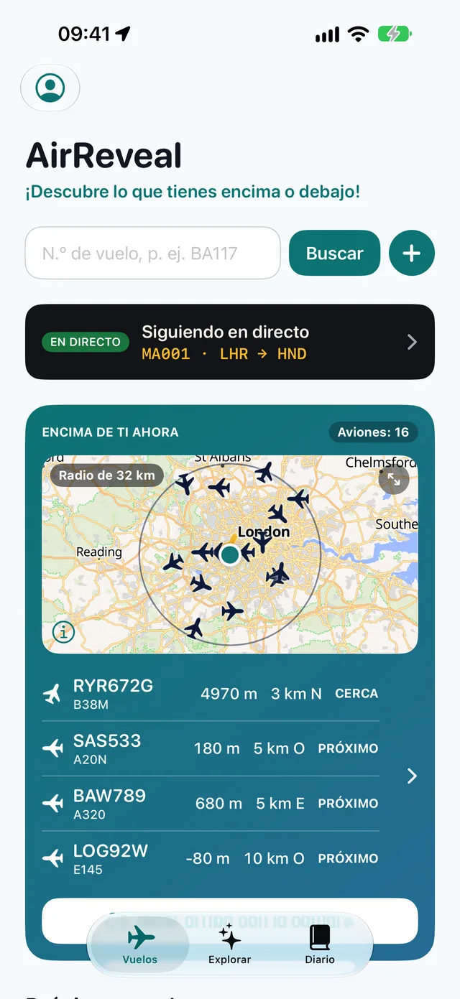
Salidas
| Vuelo | Función | Puerta | Estado |
|---|---|---|---|
| AR200 | Encima de ti · cada avión en el cielo | A1 | Embarcando |
| AR201 | Sigue cualquier avión en el mapa | A2 | A tiempo |
| AR202 | Aeronaves de emergencia con sus colores | B1 | Nuevo |
| AR203 | Apple Watch y esferas | B2 | A tiempo |
| AR204 | Actividad en directo y widgets | C1 | A tiempo |
| AR205 | Cuaderno de avistamientos y Bingo del cielo | C2 | Embarcando |
| AR206 | Estilos Paletas y Panel informativo | D1 | A tiempo |
Sígueme · tu vuelo
Sigue tu vuelo por GPS, incluso en modo avión, y AirReveal nombra las montañas, ciudades y costas que hay debajo a medida que pasas.
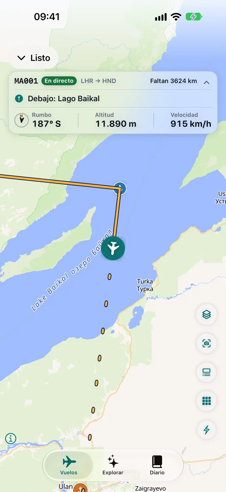
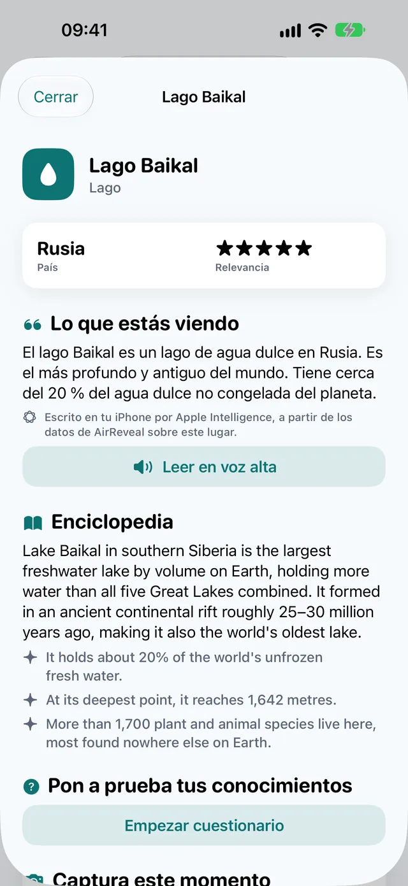
Tu compañero de ventanilla
Cada ventanilla plantea la misma pregunta. AirReveal la responde a 38.000 pies solo con el GPS de tu iPhone: descarga los mapas y lugares de tu vuelo antes de embarcar y listo.
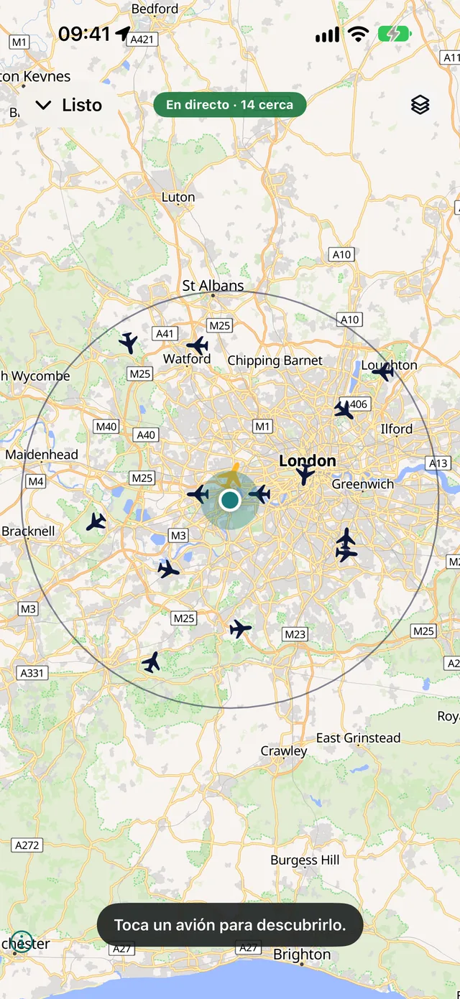
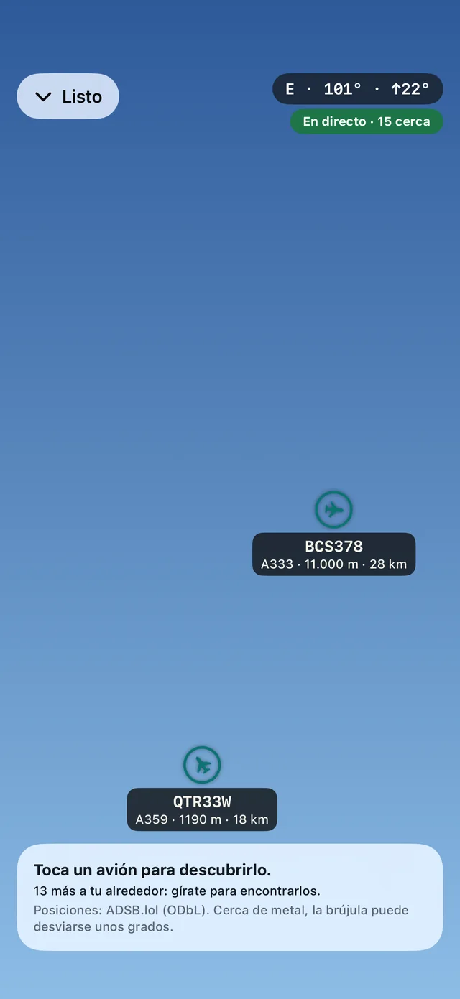
Te sigo · el cielo a tu alrededor
Cada avión a tu alrededor en un radar y un mapa en directo, con datos de vuelo libres de la comunidad. Toca uno para descubrirlo.
Novedades de la 2.0
Las aeronaves de policía, ambulancia aérea, guardacostas, extinción de incendios y militares destacan con los colores de su servicio. Activa los avisos y AirReveal te dirá cuándo se acerca una, incluso con la app cerrada.
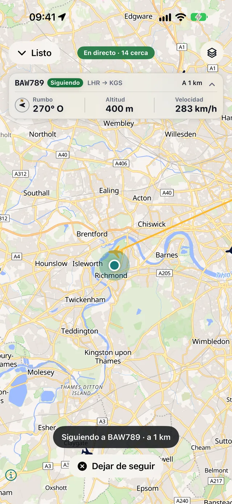
Más allá de la app
Juega, o no
Juegos para las dos mitades, en tus propios vuelos y con los aviones que pasan por encima. ¿No es lo tuyo? Desactívalos en Ajustes y AirReveal es un rastreador de vuelos sin más.
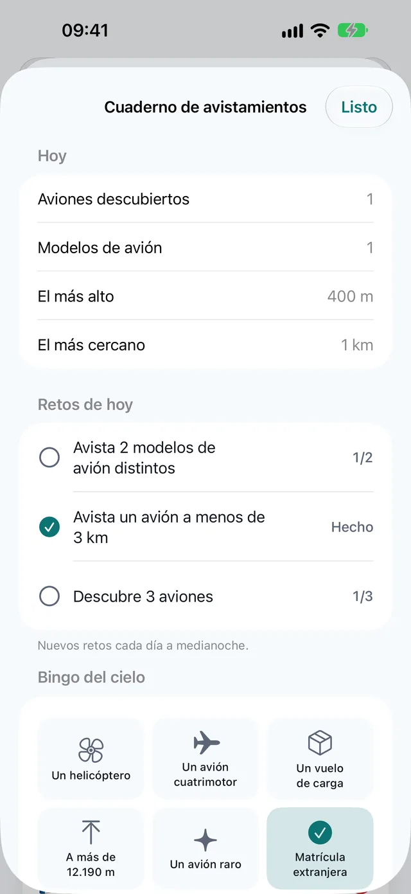
Cada avión que descubres, clasificado como común, raro o legendario, con tus mejores marcas.
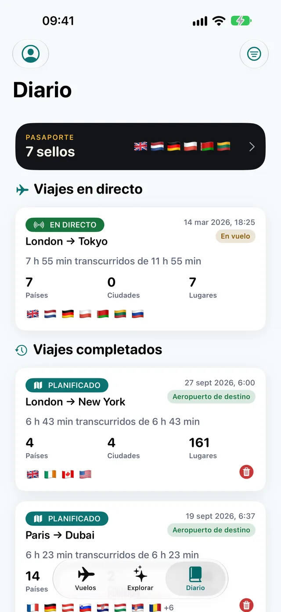
Bingo de Descubrimientos en tu vuelo, Bingo del cielo desde casa y tres pequeños retos al día.
Sella tu pasaporte, colecciona lugares y avista cada servicio de emergencia para ganar una insignia.
A tu manera
Los paneles de salidas de paletas: ámbar sobre negro.
Una pantalla de aeropuerto moderna: blanco y dorado sobre azul marino.
Tarjetas con tu tema de color, en claro u oscuro.
Para cada ventanilla
Altitud, velocidad y rumbo, tipos de avión y un cuaderno de cada avión que avistas.
Un mapa tranquilo para la misma ruta cada semana, con algo nuevo que descubrir cada vez.
En qué lado sentarse, qué hay debajo y un bingo para que todos miren por la ventanilla.
Curiosidades sobre cada lugar y tipo de avión, desde casa o a 38.000 pies.
Haz el recorrido
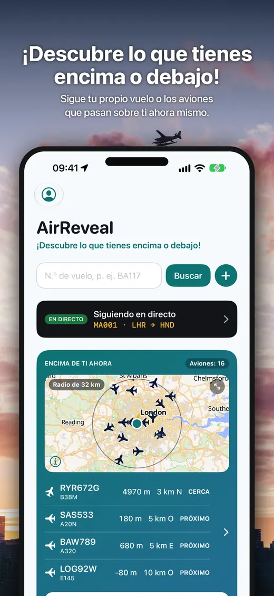
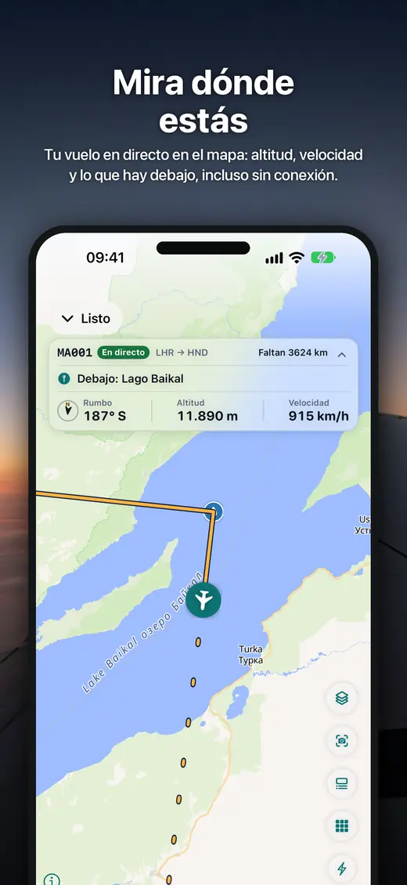
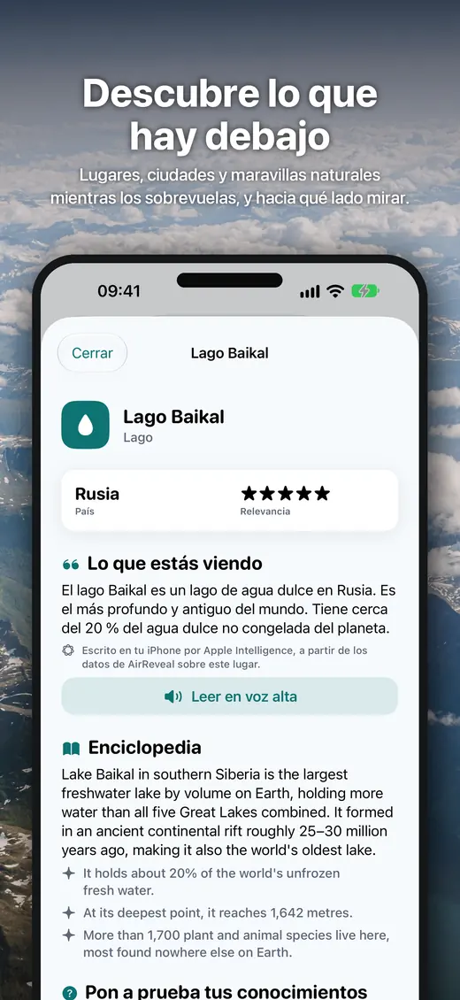
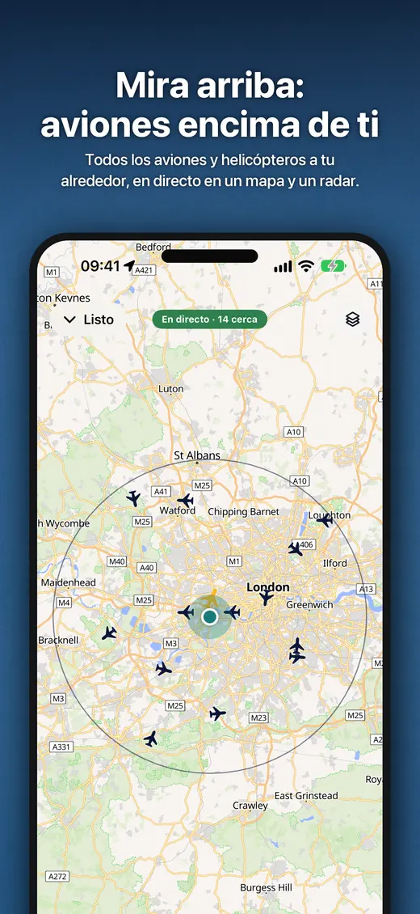
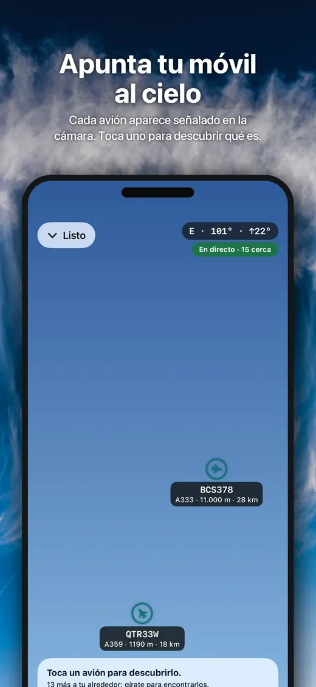
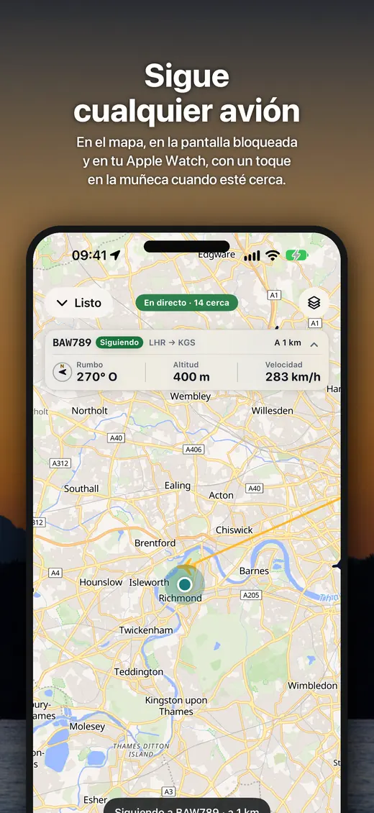
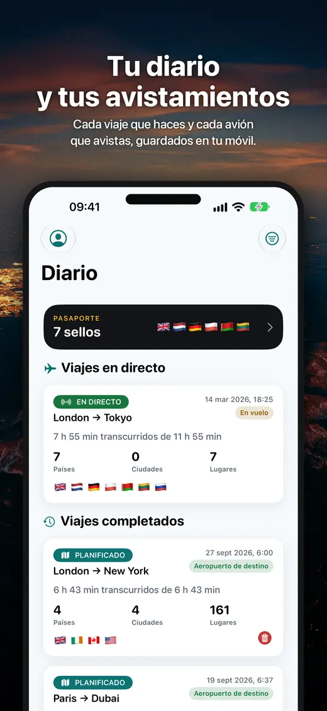
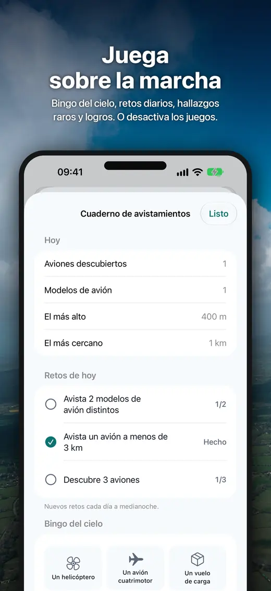
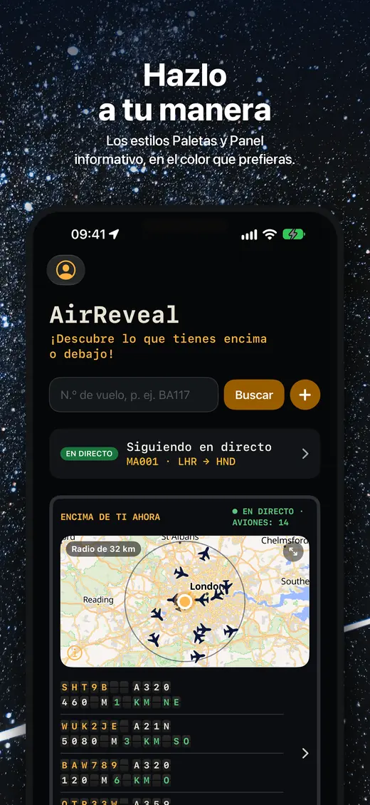
Elige cómo volar
Planifica y previsualiza vuelos y explora la experiencia antes de despegar.
Desbloquea el seguimiento GPS en directo continuo y toda la experiencia en vuelo.
Los precios se muestran en tu moneda en la App Store.
Preguntas
Abre AirReveal y usará el GPS de tu dispositivo para situarte en el mapa y nombrar los lugares, ciudades, costas y maravillas naturales bajo y delante de tu avión, en tiempo real.
Encima de ti ahora muestra cada avión a tu alrededor en un radar y un mapa en directo, con datos de vuelo libres de la comunidad. Toca uno para ver su ruta, su tipo, su altura y una foto de ese mismo avión.
Sí. Las aeronaves de policía, ambulancia aérea, guardacostas, extinción de incendios y militares se muestran con sus propios colores, y puedes activar avisos para las que elijas, dentro de la distancia que fijes. Los avisos están desactivados hasta que los actives.
Sí. El seguimiento en directo usa el GPS de tu dispositivo, que no necesita wifi a bordo ni cobertura móvil. Descarga el contenido sin conexión de un vuelo antes de salir para tener listos los mapas y los lugares.
AirReveal te dice si un lugar, o el sol a la hora dorada, está a la izquierda o a la derecha de tu aeronave, para que sepas por qué ventanilla mirar.
No. AirReveal es un compañero personal para el viaje en sí. No es un servicio oficial de estado de vuelos, tráfico aéreo ni seguridad aérea, así que consulta a tu aerolínea y a tu aeropuerto para puertas, retrasos e instrucciones de la tripulación.
Puedes planificar y previsualizar vuelos y hacer tu primer vuelo con seguimiento en directo gratis. AirReveal Pro desbloquea el seguimiento GPS en directo continuo y toda la experiencia en vuelo.
Última llamada
AirReveal está en la App Store para iPhone, iPad y Apple Watch. Gratis para empezar.